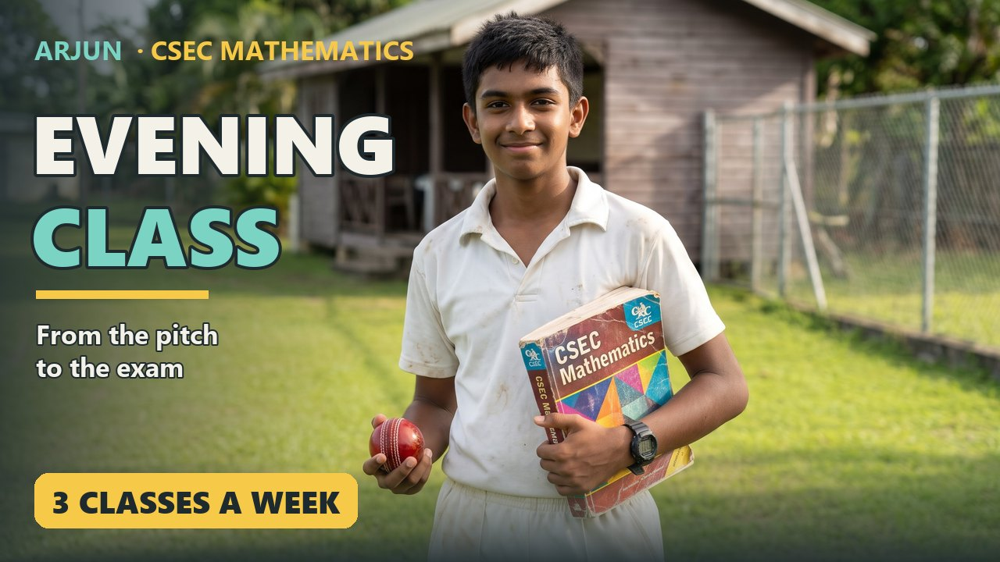

Arjun Ramdeen, 16, lives in Penal, south Trinidad, with his mother (a nurse on shifts at San Fernando General), his father, his grandfather Aja and his sister Priya (12).

Goal: At least Grade II in CSEC Mathematics, May-June 2027, aiming for Grade I.
3 of 69 sessions done. Next: Tuesday 1 December 2026, Solving Equations.
Weeks 1-3: Foundations
Tue 24 Nov 2026, week 1 Episode 1: Meet ArjunCheckpoint: Diagnostic Back story, cricket and the deal with his mother, the exam in one picture, the diagnostic. Sheet: 2/11.
Arjun: 2/11 on these eight; 15/30 on the whole test. Statistics: excellent!
Thu 26 Nov 2026, week 1 Episode 2: The Diagnosis and the Plan Skill profile, five weaknesses with evidence, habits, the 23-week plan around the cricket season. Sheet: 9/9.
Two wins tonight: fractions, and the bat and the ball!
A full over, no runs conceded. Two more wins for the list!
Tue 1 Dec 2026, week 2 Solving Equations Balance method, with every line of working
Thu 3 Dec 2026, week 2 From Words to Equations Word problems: underline, name the unknown, one equation
Sun 6 Dec 2026, week 2 Coordinates and Straight Lines Plotting, x first; tables of values; y = mx + c
Show the other 67 sessions in the plan
Tue 8 Dec 2026, week 3 Powers and Standard Form Indices and standard form
Thu 10 Dec 2026, week 3 Algebraic Fractions and Indices Laws of indices in algebra
Sun 13 Dec 2026, week 3 Run Rates Ratio, proportion and rates, with cricket
Weeks 4-9: Module 1: Number, money, measure
Tue 15 Dec 2026, week 4 Profit, Loss and Discount Consumer arithmetic in his father's shop
Thu 17 Dec 2026, week 4 Interest and Hire Purchase Simple and compound interest, hire purchase
Sun 20 Dec 2026, week 4 Bills, Wages and Currency Exchange rates and the US-dollar squeeze
Mon 21 Dec 2026, week 5 Sets and Venn Diagrams Set language, notation and two-set problems
Tue 22 Dec 2026, week 5 Charts With AshantiWith another student Joint session with Ashanti Reid (CSEC English A): reading charts and tables, and reading word problems slowly
Wed 23 Dec 2026, week 5 Christmas Nets Mixed practice: twenty short questions
Tue 29 Dec 2026, week 6 Number Bases and Sequences Bases, number properties, patterns
Wed 30 Dec 2026, week 6 Units, Time and Speed Conversions and speed-distance-time
Thu 31 Dec 2026, week 6 Year-End Review What changed in six weeks
Tue 5 Jan 2027, week 7 Perimeter and Area Shapes, circles and composite areas
Thu 7 Jan 2027, week 7 Surface Area and Volume Prisms, cylinders, units
Sun 10 Jan 2027, week 7 Error and Scale Measurement error and scale drawings
Tue 12 Jan 2027, week 8 Factorising Quadratics Common factors, trinomials, difference of squares
Thu 14 Jan 2027, week 8 Simultaneous Equations Elimination and substitution
Sun 17 Jan 2027, week 8 Quadratic Equations Factorising and the formula
Tue 19 Jan 2027, week 9 Module 1 CheckpointCheckpoint: Module 1 check Timed test on weeks 1-8
Thu 21 Jan 2027, week 9 Checkpoint Results Updated skill profile; the plan around the SSCL season
Sun 24 Jan 2027, week 9 Variation Direct and inverse variation; linear-quadratic pairs
Weeks 10-15: Module 2: Algebra, graphs, geometry
Tue 26 Jan 2027, week 10 Relations and Functions Mappings, function notation
Thu 28 Jan 2027, week 10 Gradient and the Line Gradient, midpoint, equation of a line
Sun 31 Jan 2027, week 10 Composite and Inverse Functions Composite and inverse functions
Tue 2 Feb 2027, week 11 Quadratic Graphs Plotting and reading parabolas
Thu 4 Feb 2027, week 11 Batting Averages Mean, median, mode and spread
Sun 7 Feb 2027, week 11 Charts and Chance Reading charts, inferences, first probability
Wed 10 Feb 2027, week 12 Geometry Basics Lines, angles and constructions (after Carnival)
Thu 11 Feb 2027, week 12 Angles and Polygons Angle facts with reasons
Sun 14 Feb 2027, week 12 Congruence and Similarity Similar shapes and solids
Tue 16 Feb 2027, week 13 Pythagoras and SOH CAH TOA Right-angled triangles
Thu 18 Feb 2027, week 13 Elevation and Depression Trig in context
Sun 21 Feb 2027, week 13 Trig Clinic Mixed trigonometry, every step labelled
Tue 23 Feb 2027, week 14 Vectors Column vectors and their arithmetic
Thu 25 Feb 2027, week 14 Matrices Matrix arithmetic
Sun 28 Feb 2027, week 14 Mixed Practice Paper 2 style, Module 2 topics
Tue 2 Mar 2027, week 15 Module 2 CheckpointCheckpoint: Module 2 check Timed test on weeks 10-14
Thu 4 Mar 2027, week 15 Checkpoint Results Updated skill profile; adjust the plan
Sun 7 Mar 2027, week 15 Grouped Data Histograms and frequency polygons
Weeks 16-19: Module 3: Higher topics
Tue 9 Mar 2027, week 16 Cumulative Frequency Grouped averages, ogives, quartiles
Thu 11 Mar 2027, week 16 Probability Combined events and tree diagrams
Sun 14 Mar 2027, week 16 Linear Programming Inequalities and regions
Tue 16 Mar 2027, week 17 Travel Graphs Distance-time and speed-time graphs
Thu 18 Mar 2027, week 17 Circle Theorems The theorems, with reasons
Sun 21 Mar 2027, week 17 Transformations Reflections, rotations, enlargements
Tue 23 Mar 2027, week 18 Sine and Cosine Rules Non-right triangles, area, segments
Thu 25 Mar 2027, week 18 Bearings Bearings and back-bearings
Sat 27 Mar 2027, week 18 Vector Geometry and Matrix Maps Position vectors; matrix transformations (moved for Easter)
Tue 30 Mar 2027, week 19 Module 3 CheckpointCheckpoint: Module 3 check Timed test on weeks 15-18
Thu 1 Apr 2027, week 19 Results and the SBA Updated profile; SBA final checks
Sun 4 Apr 2027, week 19 Exam Strategy Timing plans for both papers
Weeks 20-23: Exam rehearsal
Tue 6 Apr 2027, week 20 Paper 2, TimedCheckpoint: Paper 2 The May-June 2026 Paper 2 in 2 h 40 min
Thu 8 Apr 2027, week 20 Paper 2 Review Marked with the worked-solution videos
Sun 11 Apr 2027, week 20 Fix the Gaps 1 The marks he lost, by topic
Tue 13 Apr 2027, week 21 Paper 1 PracticeCheckpoint: Paper 1 60 multiple-choice items in 90 minutes
Thu 15 Apr 2027, week 21 Paper 1 Review Item analysis by topic
Sun 18 Apr 2027, week 21 Fix the Gaps 2 Rewrites and retries
Phone on the desk; 3 WhatsApp checks in the first ten minutes; studies only the night before tests.
Phone in another room for each 45-minute block
Study like nets: same time, every day, short and focused
Habit: confidence
'I'm not a maths person'; gives up on a question after one try.
Keep a wins list: one question solved every day
Read a blank as 'not yet', and try one first step
Strengths
Mental arithmetic with real numbers (overs, runs, rates)
Statistics: averages and rates
Competitive focus once he is engaged
Arjun's story
His father's small auto-parts shop is squeezed by the US-dollar shortage: he waits weeks for foreign exchange to import stock, and money at home is tight.
Arjun is a leg-spinner and lower-order batter for South Ridge Secondary in the PowerGen Secondary Schools Cricket League. Aja taught him to bowl with a tennis ball in the yard. In the 2026 season he took 31 wickets and was named in a national Under-17 training squad.
Under the states of emergency, evening practice was cut short and his mother would not let him travel late to matches; he spent the time on cricket highlights, not books.
He scored 38% in his Form 4 maths exam and believes he is 'not a maths person', yet he works out bowling economy rates and batting averages in his head.
His mother's deal: no cricket camps unless he passes five CSEC subjects, maths included. A cricket scholarship to a college in the United States, or to UWI St Augustine, needs maths too.
Sessions run online at 7 pm Trinidad time (6 pm in Jamaica), on Tuesdays, Thursdays and Sundays, after training. He is often tired, sometimes late, and his phone buzzes with the team WhatsApp group.